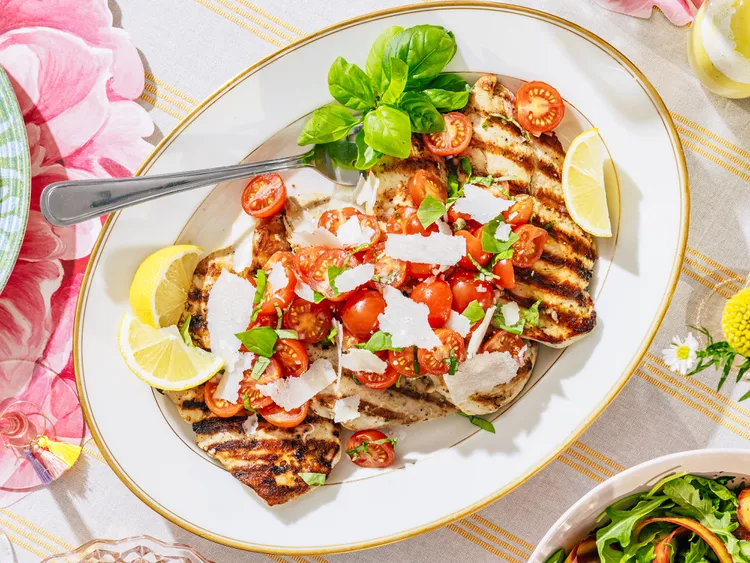

Home
Bruschetta Chicken

This bruschetta chicken recipe is perfect for springtime entertaining. Grilled chicken is topped with a fresh
tomato-basil salad for a main dish that’s both beautiful and delicious.
Ingredients
- 4 (8 ounce) skinless, boneless chicken breasts
- 1/4 cup olive oil
- 2 tablespoons dry ranch or Italian salad dressing mix
- 1 1/2 pounds cherry tomatoes, halved
- 2 tablespoons finely chopped shallot
Directions
- On a clean work surface, halve each chicken breast horizontally (parallel to work surface) to make 8
(4-ounce) cutlets. For marinade, combine olive oil and dressing mix in a gallon-size resealable plastic bag.
Add chicken; seal bag and turn to coat completely. Chill at least 1 hour or up to 8 hours.
- Meanwhile, for tomato salad, combine tomatoes, shallot, lemon juice, vinegar, basil, garlic, capers, salt,
and pepper in a large bowl. Let stand at room temperature up to 1 hour before serving.
-
Preheat an outdoor grill to medium heat (350 to 375 degrees F (175 to 190 degrees C)). Remove chicken from
marinade; discard marinade.
-
Oil grill grates. Arrange chicken on grill. Cook, covered, turning halfway through, until an instant-read
thermometer inserted into thickest parts of chicken registers 165 degrees F (74 degrees C), 8 to 10 minutes.
Serve chicken topped with tomato salad. Serve with Parmesan and lemon wedges.